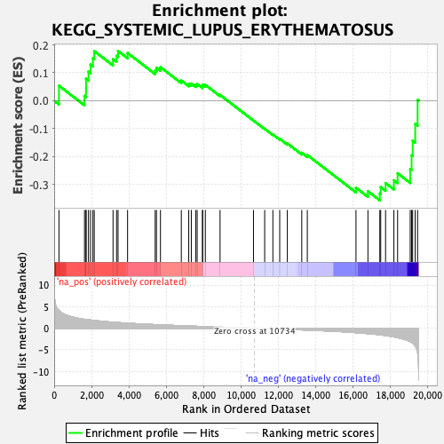

| | | Dataset | PFS |
| Phenotype | NoPhenotypeAvailable |
| Upregulated in class | na_neg |
| GeneSet | KEGG_SYSTEMIC_LUPUS_ERYTHEMATOSUS |
| Enrichment Score (ES) | -0.3568236 |
| Normalized Enrichment Score (NES) | -1.2508291 |
| Nominal p-value | 0.13720317 |
| FDR q-value | 0.43982893 |
| FWER p-Value | 0.999 |
Table: GSEA Results Summary

Fig 1: Enrichment plot: KEGG_SYSTEMIC_LUPUS_ERYTHEMATOSUS
Profile of the Running ES Score & Positions of GeneSet Members on the Rank Ordered List
| SYMBOL | RANK IN GENE LIST | RANK METRIC SCORE | RUNNING ES | CORE ENRICHMENT | | 1 | C1QC | 256 | 4.114 | 0.0537 | No |
| 2 | CD86 | 1624 | 2.071 | 0.0172 | No |
| 3 | C4B | 1707 | 2.022 | 0.0458 | No |
| 4 | C4A | 1708 | 2.022 | 0.0787 | No |
| 5 | C1R | 1838 | 1.952 | 0.1038 | No |
| 6 | C1QB | 1948 | 1.899 | 0.1290 | No |
| 7 | C1QA | 2076 | 1.822 | 0.1521 | No |
| 8 | FCGR2A | 2146 | 1.793 | 0.1777 | No |
| 9 | FCGR3B | 3153 | 1.392 | 0.1487 | No |
| 10 | CD40 | 3343 | 1.337 | 0.1607 | No |
| 11 | C7 | 3423 | 1.315 | 0.1780 | No |
| 12 | GRIN2B | 3932 | 1.167 | 0.1709 | No |
| 13 | ELANE | 5410 | 0.832 | 0.1086 | No |
| 14 | ACTN4 | 5480 | 0.817 | 0.1183 | No |
| 15 | C1S | 5694 | 0.779 | 0.1201 | No |
| 16 | FCGR2B | 6810 | 0.584 | 0.0723 | No |
| 17 | CD28 | 7208 | 0.515 | 0.0603 | No |
| 18 | C6 | 7346 | 0.493 | 0.0613 | No |
| 19 | TNF | 7582 | 0.454 | 0.0566 | No |
| 20 | FCGR1A | 7660 | 0.443 | 0.0598 | No |
| 21 | FCGR2C | 7946 | 0.399 | 0.0517 | No |
| 22 | C8G | 7952 | 0.398 | 0.0579 | No |
| 23 | IL10 | 8097 | 0.378 | 0.0566 | No |
| 24 | C3 | 8885 | 0.266 | 0.0206 | No |
| 25 | SSB | 10676 | 0.009 | -0.0712 | No |
| 26 | SNRPD3 | 11276 | -0.075 | -0.1007 | No |
| 27 | ACTN1 | 11715 | -0.138 | -0.1209 | No |
| 28 | C8B | 12081 | -0.196 | -0.1365 | No |
| 29 | ACTN2 | 12490 | -0.259 | -0.1532 | No |
| 30 | FCGR3A | 13262 | -0.386 | -0.1865 | No |
| 31 | SNRPB | 13560 | -0.435 | -0.1947 | No |
| 32 | C9 | 16166 | -1.028 | -0.3117 | No |
| 33 | ACTN3 | 16806 | -1.251 | -0.3242 | No |
| 34 | CD80 | 17443 | -1.521 | -0.3321 | Yes |
| 35 | CD40LG | 17491 | -1.546 | -0.3094 | Yes |
| 36 | TRIM21 | 17751 | -1.704 | -0.2950 | Yes |
| 37 | SNRPD1 | 18197 | -2.002 | -0.2853 | Yes |
| 38 | IFNG | 18396 | -2.188 | -0.2599 | Yes |
| 39 | C8A | 19071 | -3.079 | -0.2445 | Yes |
| 40 | CTSG | 19146 | -3.255 | -0.1954 | Yes |
| 41 | C2 | 19202 | -3.424 | -0.1426 | Yes |
| 42 | C5 | 19338 | -4.077 | -0.0833 | Yes |
| 43 | GRIN2A | 19467 | -5.713 | 0.0029 | Yes |
Table: GSEA details [plain text format]
Fig 2: KEGG_SYSTEMIC_LUPUS_ERYTHEMATOSUS: Random ES distribution
Gene set null distribution of ES for KEGG_SYSTEMIC_LUPUS_ERYTHEMATOSUS